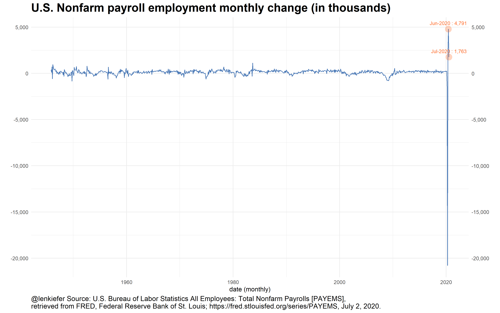
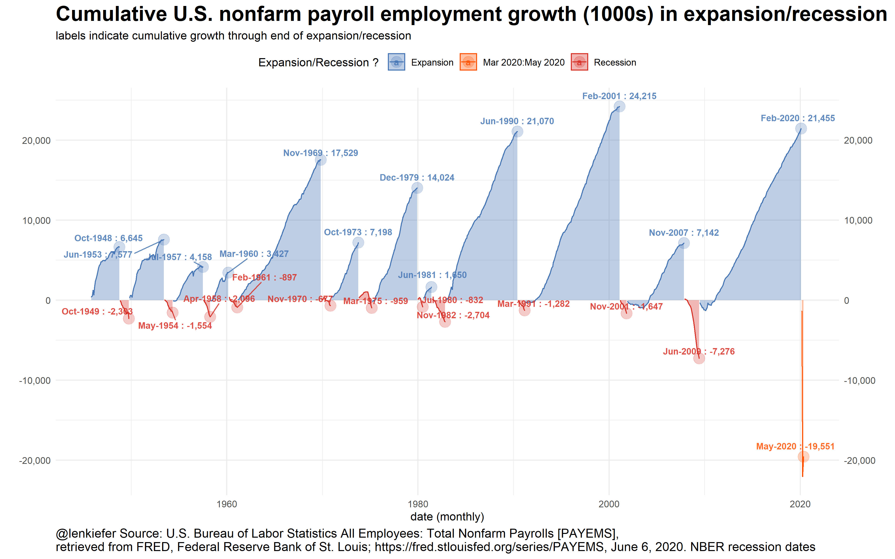
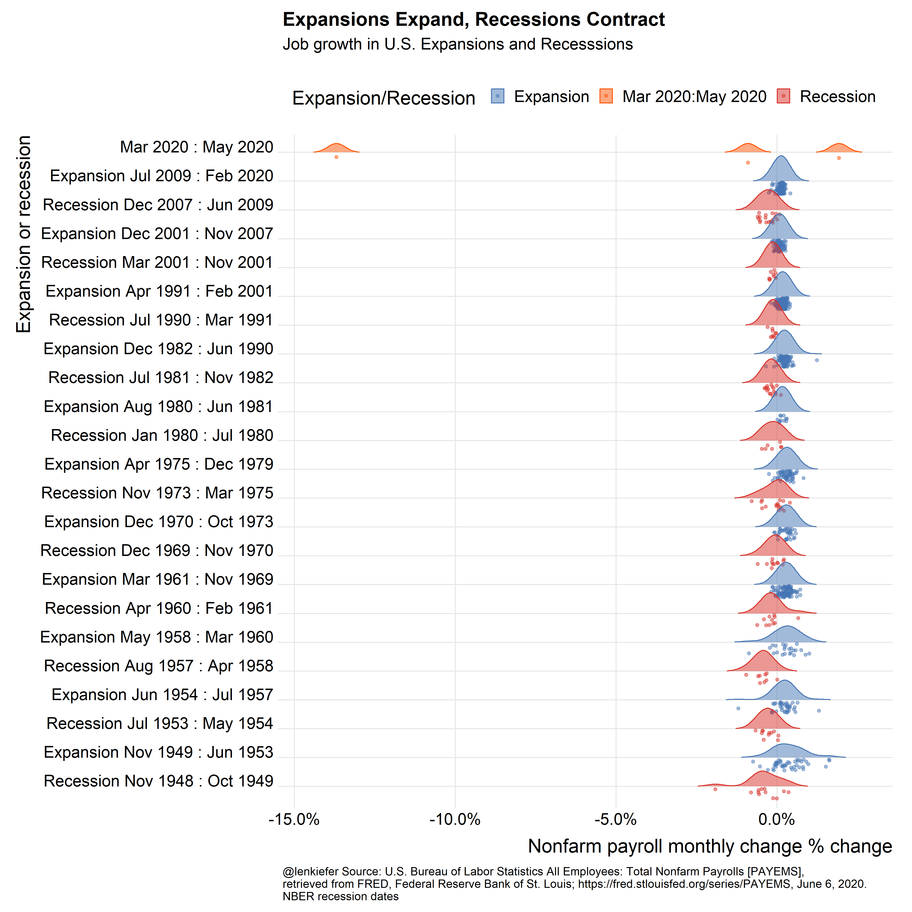

Yesterday I completed the elusive presentation quadfecta. I did a talk on Zoom, Teams, WebEx and Skype. These communication apps are great, but after a few hours of maintaining “resting Zoom face” (you want to look interested as the camera is always rolling), I felt a bit exhausted.
But it was totally worth it. The highlight for me was being able to join Jeffrey Shaffer, Steve Wexler, Amanda Makulec, and Andy Cotgreave for Chart Chat. I will be on #14, which as of writing isn’t posted yet.
On Chart Chat I got the chance to discuss many of the charts we have made here. Most of them are collected in my post Updated Favorite Data Visualizations, there you will find links to other posts with R code.
Jobs Friday 2020
Friday was also Jobs Friday when the U.S. Bureau of Labor Statistics releases the widely-watched employment situation summary. This month’s report was especially interesting as it totally surpised most analysts. Consensus forecasts for U.S> nonfarm payroll monthly growth were about 7.5 million, with none of more of the 70 economists surveyed forecasting postive job growth. But the estimate from BLS was for an increase of 2.5 million jobs. That’s a miss of about 10 million.
guessing monthly statistics with so much inherent noise is very difficult, but this month's payrolls beat expectations by about 10 million pic.twitter.com/0khhOSnK5n
— üìà ùôªùöéùöó ùô∫ùöíùöéùöèùöéùöõ üìä (@lenkiefer) June 5, 2020
Every month Jobs Friday creates a flurry of charts, some good some bad. But with all the volatility interpretations were all over the place.
CNBC tweeted out this take, which caused a lot of concern. JD Long (Twitter [at]CMastication) had a humourous suggestion:
Delete Excel from your computer.
— JD Long (@CMastication) June 5, 2020
Alberto Cairo wrote a whole blog about “Psychopathic Charts”.
Alberto suggested a bar chart might be a better alternative than a line used by CNBC to show the monthly change in jobs.
If we don’t just delete Excel, or whatever program to generate our chart, what could we do? Below, I offer a few alternatives, some discussion and R code.
The chart in question
Here’s a recreation of the chart in question, showing monthly U.S. nonfarm payroll changes. I zoomed out to show more history, to emphasize how extreme the recent values are.

In this chart the line makes it look like job growth is rocketing higher. However, it masks the fact that cumulative job growth is still quite negative.
In his blog post, Alberto suggested a bar as an alternative. But with these data I’m not sure it solves all the issues:
If you have a lot of little bars together, they tend to look like a line to me. I think a plot of cumulative changes might be an even better alternative:

This version I think helps underscore how tough the current U.S. employment situation is. Yes, a gain of 2.5 million is a small dose of good news. But with employment still down almost 20 million since February there remains a lot of work to do.
As a bonus, here is a more abstract chart that compares the distribution of job gains in recessions and expansions.
Because the U.S. economy has grown so much since the 1940s, it might be better to consider percent changes rather than absolute changes.

Note It is very likely that the U.S. entered recession sometime around March 2020. The NBER has not made an official declaration, so I colored the period from March 2020 forward orange.
R code for charts
#####################################################################################
## Load libraries ----
#####################################################################################
library(fredr)
library(sqldf)
library(ggridges)
library(data.table)
library(tidyverse)
library(patchwork)
# inari color ----
inari <- "#fe5305"
#####################################################################################
## Get employment data from FRED ----
#####################################################################################
# You need your own API Key
fredr_set_key(YOURAPIKEYHERE)
#################################################
# get and wrangle data
# Seasonally adjusted weekly claims
df <-
fredr(series_id = "PAYEMS",
observation_start = as.Date("1948-01-01")) %>%
#rename(price=value) %>% # legacy names from using tidyquant
mutate(jg = c(NA, diff(value))) # add monthly change
#####################################################################################
## Make Recession Data Frame ----
# dates from NBER Recession likely in 2022, but no official dating
# https://www.nber.org/cycles/cyclesmain.html
#####################################################################################
recessions.df = read.table(
textConnection(
"Peak, Trough
1948-11-01, 1949-10-01
1953-07-01, 1954-05-01
1957-08-01, 1958-04-01
1960-04-01, 1961-02-01
1969-12-01, 1970-11-01
1973-11-01, 1975-03-01
1980-01-01, 1980-07-01
1981-07-01, 1982-11-01
1990-07-01, 1991-03-01
2001-03-01, 2001-11-01
2007-12-01, 2009-06-01
2020-03-01, 2100-01-01"
),
sep = ',',
colClasses = c('Date', 'Date'),
header = TRUE
)
rdf <- recessions.df %>%
mutate(TroughLag = lag(Trough), # find last trough
PeakLag = lag(Peak) # find last peak)
# Merge with sqldf
output <- sqldf(
"select * from df left join rdf
on (df.date>=rdf.Peak and df.date <= rdf.Trough or
(df.date > rdf.TroughLag and df.date <= rdf.Peak)) "
)
outdf <- mutate(
output,
expand = ifelse(date >= Peak, "Recession", "Expansion"),
d1 = as.Date(ifelse(
expand == "Recession", Peak, TroughLag %m+% months(1)
)),
d2 = as.Date(ifelse(
expand == "Recession", Trough, Peak %m-% months(1)
))
) %>%
mutate(name = paste0(
expand,
" ",
as.character(d1, format = "%b %Y"),
" : ",
as.character(d2, format = "%b %Y")
)) %>%
# relabel the last row to say :present
mutate(name = ifelse(name == "Recession Mar 2020 : Jan 2100",
"Mar 2020 : May 2020", name)) %>%
mutate(
contraction = interval(Peak, Trough) %/% months(1),
# Peak to Trough
expansion = interval(TroughLag, Peak) %/% months(1),
# Previous Trough to this Peak
cycle1 = interval(TroughLag, Trough) %/% months(1),
# Trough from previous Trough
cycle2 = interval(PeakLag, Peak) %/% months(1)
) # Peak from previous Peak
# adjust labels
outdf <-
mutate(outdf %>% group_by(name), cj = cumsum(jg)) %>% ungroup() %>%
mutate(expand2 = ifelse(date <= "2020-02-02", expand, "Mar 2020:May 2020")) %>%
# get last value each expansion/recession
group_by(name) %>%
mutate(dmax = max(date), fj = last(cj)) %>% ungroup()
dlist <- c(tail(outdf$date, 3), filter(outdf, jg < -788)$date)
#####################################################################################
## Make line plot ----
#####################################################################################
ggplot(data = outdf, aes(x = date, y = jg)) +
geom_line(color = "#4575b4") +
theme_minimal() +
theme(
legend.position = "top",
plot.title = element_text(face = "bold", size = rel(1.8)),
plot.caption = element_text(hjust = 0, size = 12)
) +
geom_point(
size = 5,
alpha = 0.25,
data = . %>% tail(2),
color = inari
) +
geom_text(
size = 3,
alpha = 0.85,
color = inari,
data = . %>% tail(2),
aes(
label = paste0(format(date, "%b-%Y"), " : ", scales::comma(jg)),
vjust = ifelse(jg > 0, -1.1, 1.1)
)
) +
scale_color_manual(name = "Expansion/Recession ? ",
values = c("#4575b4", inari , "#d73027")) +
scale_fill_manual(name = "Expansion/Recession ? ",
values = c("#4575b4", inari , "#d73027")) +
scale_y_continuous(label = scales::comma, sec.axis = dup_axis()) +
labs(
x = "date (monthly)",
y = "",
title = "U.S. Nonfarm payroll employment monthly change (in thousands)",
caption = "@lenkiefer Source: U.S. Bureau of Labor Statistics All Employees: Total Nonfarm Payrolls [PAYEMS],\nretrieved from FRED, Federal Reserve Bank of St. Louis; https://fred.stlouisfed.org/series/PAYEMS, June 6, 2020."
)
#####################################################################################
## Make bar plot ----
#####################################################################################
ggplot(data = outdf,
aes(
x = date,
y = jg,
color = expand2,
fill = expand2,
group = name
)) +
geom_col(alpha = 0.75, width = 0.8) +
theme_minimal() +
theme(
legend.position = "top",
plot.title = element_text(face = "bold", size = rel(1.8)),
plot.caption = element_text(hjust = 0, size = 12)
) +
geom_point(
size = 5,
alpha = 0.25,
data = . %>% filter(date %in% dlist)
) +
geom_text(
size = 3,
alpha = 0.85,
data = . %>% filter(date %in% dlist),
aes(
label = paste0(format(date, "%b-%Y"), " : ", scales::comma(jg)),
vjust = ifelse(jg > 0, -1.1, 1.1)
)
) +
scale_color_manual(name = "Expansion/Recession ? ",
values = c("#4575b4", inari , "#d73027")) +
scale_fill_manual(name = "Expansion/Recession ? ",
values = c("#4575b4", inari , "#d73027")) +
scale_y_continuous(label = scales::comma, sec.axis = dup_axis()) +
labs(
x = "date (monthly)",
y = "",
title = "U.S. Nonfarm payroll employment monthly change (in thousands)",
caption = "@lenkiefer Source: U.S. Bureau of Labor Statistics All Employees: Total Nonfarm Payrolls [PAYEMS],\nretrieved from FRED, Federal Reserve Bank of St. Louis; https://fred.stlouisfed.org/series/PAYEMS, June 6, 2020. NBER recession dates"
)
#####################################################################################
## Make cumulative growth chart ----
#####################################################################################
ggplot(data = outdf,
aes(
x = date,
y = cj,
color = expand2,
fill = expand2,
group = name
)) +
geom_area(alpha = 0.35, width = 0.8) +
geom_line() +
theme_minimal() +
theme(
legend.position = "top",
plot.title = element_text(face = "bold", size = rel(1.8)),
plot.caption = element_text(hjust = 0, size = 12)
) +
geom_point(
size = 5,
alpha = 0.25,
data = . %>% filter(date == dmax)
) +
ggrepel::geom_text_repel(
size = 3,
alpha = 0.85,
fontface = "bold",
data = . %>% filter(date == dmax),
aes(
label = paste0(format(date, "%b-%Y"), " : ", scales::comma(round(cj), accuracy =
1)),
vjust = ifelse(jg > 0, -1.1, 1.1)
)
) +
scale_color_manual(name = "Expansion/Recession ? ",
values = c("#4575b4", inari , "#d73027")) +
scale_fill_manual(name = "Expansion/Recession ? ",
values = c("#4575b4", inari , "#d73027")) +
scale_y_continuous(label = scales::comma, sec.axis = dup_axis()) +
labs(
x = "date (monthly)",
y = "",
title = "Cumulative U.S. Nonfarm payroll employment growth in expansion/recession",
subtile = "labels indicate cumulative growth through end of expansion/recession",
caption = "@lenkiefer Source: U.S. Bureau of Labor Statistics All Employees: Total Nonfarm Payrolls [PAYEMS],\nretrieved from FRED, Federal Reserve Bank of St. Louis; https://fred.stlouisfed.org/series/PAYEMS, June 6, 2020. NBER recession dates"
)
#####################################################################################
## Make ridges plot ----
#####################################################################################
ggplot(
data = outdf %>% filter(!is.na(expand) & date >= "1948-11-01"),
aes(
x = jg,
y = fct_reorder(name, date),
label = name,
fill = expand2,
color = expand2
)
) +
scale_color_manual(name = "Expansion/Recession ",
values = c("#4575b4", inari , "#d73027")) +
scale_fill_manual(name = "Expansion/Recession ",
values = c("#4575b4", inari , "#d73027")) +
scale_discrete_manual(
name = "Expansion/Recession ",
aesthetics = "point_color",
values = c("#4575b4", inari , "#d73027")
) +
geom_density_ridges(
aes(point_color = expand2),
rel_min_height = 0.01,
#point_color="royalblue",
scale = 0.9,
jittered_points = TRUE,
position = "raincloud",
alpha = 0.5
) +
theme_ridges(font_size = 20) +
theme(legend.position = "top",
plot.caption = element_text(hjust = 0, size = 12)) +
labs(
x = "Nonfarm payroll monthly change (1000s)",
y = "Expansion or recession",
title = "Expansions Expand, Recessions Contract",
subtitle = "Job growth in U.S. Expansions and Recesssions\n",
caption = "@lenkiefer Source: U.S. Bureau of Labor Statistics All Employees: Total Nonfarm Payrolls [PAYEMS],\nretrieved from FRED, Federal Reserve Bank of St. Louis; https://fred.stlouisfed.org/series/PAYEMS, June 6, 2020.\nNBER recession dates"
)
#####################################################################################
## Make ridges plot with % changes----
#####################################################################################
outdf <- mutate(outdf, pg = jg / lag(value, 1))
ggplot(
data = outdf %>% filter(!is.na(expand) & date >= "1948-11-01"),
aes(
x = pg,
y = fct_reorder(name, date),
label = name,
fill = expand2,
color = expand2
)
) +
scale_color_manual(name = "Expansion/Recession ",
values = c("#4575b4", inari , "#d73027")) +
scale_fill_manual(name = "Expansion/Recession ",
values = c("#4575b4", inari , "#d73027")) +
scale_discrete_manual(
name = "Expansion/Recession ",
aesthetics = "point_color",
values = c("#4575b4", inari , "#d73027")
) +
geom_density_ridges(
aes(point_color = expand2),
rel_min_height = 0.01,
#point_color="royalblue",
scale = 0.9,
jittered_points = TRUE,
position = "raincloud",
alpha = 0.5
) +
theme_ridges(font_size = 20) +
scale_x_continuous(labels = scales::percent) +
theme(legend.position = "top",
plot.caption = element_text(hjust = 0, size = 12)) +
labs(
x = "Nonfarm payroll monthly change % change",
y = "Expansion or recession",
title = "Expansions Expand, Recessions Contract",
subtitle = "Job growth in U.S. Expansions and Recesssions\n",
caption = "@lenkiefer Source: U.S. Bureau of Labor Statistics All Employees: Total Nonfarm Payrolls [PAYEMS],\nretrieved from FRED, Federal Reserve Bank of St. Louis; https://fred.stlouisfed.org/series/PAYEMS, June 6, 2020.\nNBER recession dates"
)